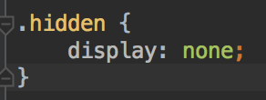
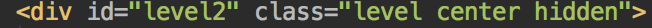
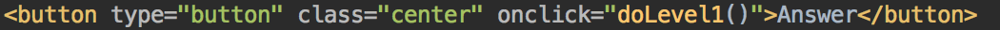

"How Many?" Game instructions
-
Verify that you are able to open the website on your lab computer. It should look a little bit like this:

-
Go to howmany.html. You will see 3 comments that say "Add a question here".
Replace these comments with questions about the picture. One question should be about a number e.g. "How many planes are there". One question should be about a string e.g. "What country is this". And one question should be about a boolean e.g. "Is this cool?"
When you're done. Reload the page and verify that your questions are showing up.
-
Right now all of our images are visible, but we only want to show the user the question they're currently working on. Luckily we have a css class that hides things in howmany.css:

Add this css class to the div that contains level2 and the div that contains level3.

Reload the page and verify that only the first level is showing.
-
In the browser go to tools->dev tools. Then open the console. Next click the "answer button". You should see an error in the console "doLevel1" is not defined. This happens because we've set the button's onclick to a javascript function that doesn't exist yet:

We need to add a doLevel1() javascript function to our howmany.js file.
-
Open howmany.js and add a doLevel1() function. You should make it so that it writes a message to the console.
Now test out the answer button in the browser and make sure it writes your message to the console.
-
Good. Now would be a good time to add a doLevel2() and doLevel3() function to your javascript as well.
-
-add a picture for step 1, 2, and 3
-add questions for step 1 2 and 3
-add hide method
-add show method
-test in dev tools